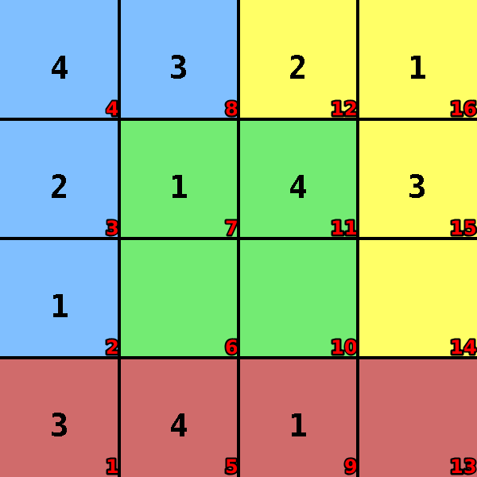
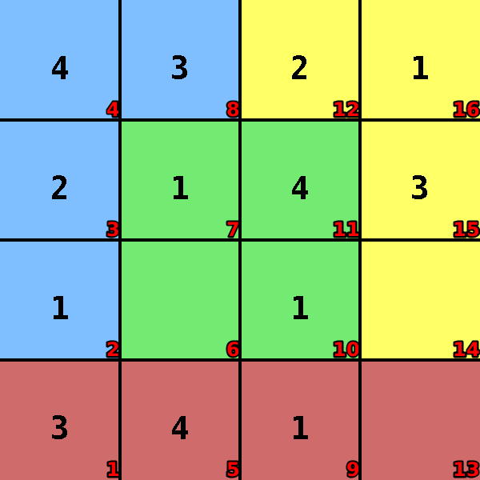
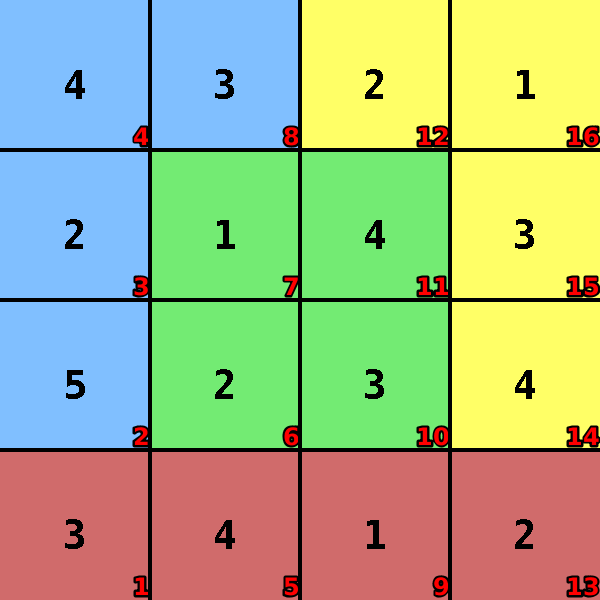
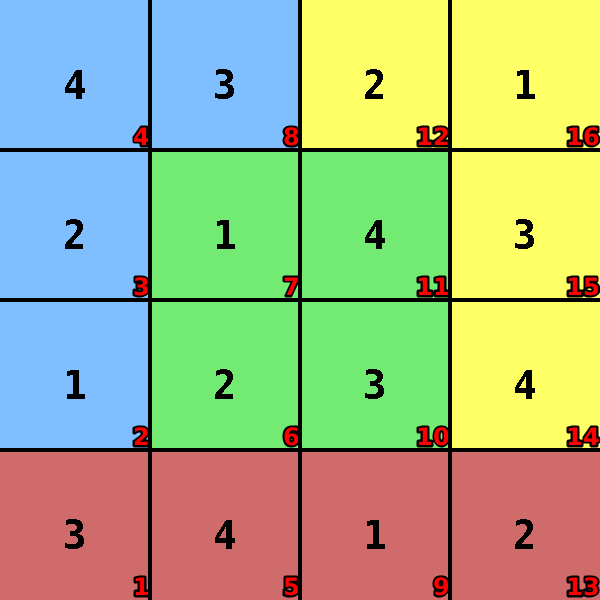

Killer-sudoku
Language: Teaching Script Entire Dialog
World states:
init-killer-sudoku.world
fail-killer-sudoku1.world
fail-killer-sudoku2.world
final-killer-sudoku.world
Primitive concepts used
Object types:
|
locations, blocks |
Colors:
|
red, blue
|
| Spatial relations: |
on, below, between |
| Functions: |
count of, less than |
Teaching Dialog (Rosie in bold)
TEACHER: The name of the puzzle is killer-sudoku.
Please setup the puzzle.
TEACHER: Load init-killer-sudoku.

Ok.
TEACHER: Ok.
Please describe the actions, goals, and failure conditions.
TEACHER: The name of the action is write-1-to-4.
What are the conditions of the action.
TEACHER: You can write a number that is between one and four onto an empty location.
Please describe the meaning of 'empty' in this context.
TEACHER: If the value of a location is absent then the location is empty.
Ok, I've learned the meaning of 'empty' for this context.
I've learned the action.
TEACHER: The solution has four steps.
Ok.
TEACHER: Load fail-killer-sudoku1.

Ok.
TEACHER: The name of a failure is same-row-value.
Please setup the failure condition.
TEACHER: Ok.
Please describe the failure condition.
TEACHER: If the row of a location is the row of a location and the value of the former location is the value of the latter location then you lose.
I've learned the failure condition.
TEACHER: The name of a failure is same-col-value.
Please setup the failure condition.
TEACHER: Ok.
Please describe the failure condition.
TEACHER: If the column of a location is the column of a location and the value of the former location is the value of the latter location then you lose.
I've learned the failure condition.
TEACHER: The name of a failure is same-section-value.
Please setup the failure condition.
TEACHER: Ok.
Please describe the failure condition.
TEACHER: If the section of a location is the section of a location and the value of the former location is the value of the latter location then you lose.
I've learned the failure condition.
TEACHER: Load fail-killer-sudoku2.

Ok.
TEACHER: The name of a failure is group-sum-10.
Please setup the failure condition.
TEACHER: Ok.
Please describe the failure condition.
TEACHER: If the locations in a group are filled and the sum of the values of the group is not ten then you lose.
Please describe the meaning of 'group' in this context.
TEACHER: If the blocks have the same color then they are in a group.
Ok, I've learned the meaning of 'group' for this context.
Please describe the meaning of 'filled' in this context.
TEACHER: If the value of a location is more than zero then the location is filled.
Ok, I've learned the meaning of 'filled' for this context.
I've learned the failure condition.
TEACHER: Load final-killer-sudoku.

Ok.
TEACHER: The name of the goal is all-filled.
Please setup the goal state.
TEACHER: Ok.
Please describe the goal.
TEACHER: The goal is that all locations are filled.
I've learned the goal.
TEACHER: Done.
I've learned killer-sudoku. Should I try to solve the puzzle?
TEACHER: No.
Ok.